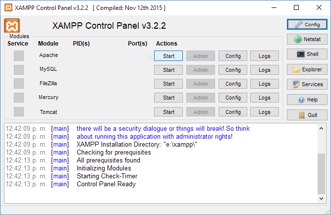
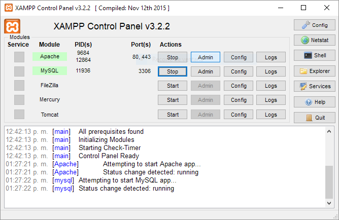
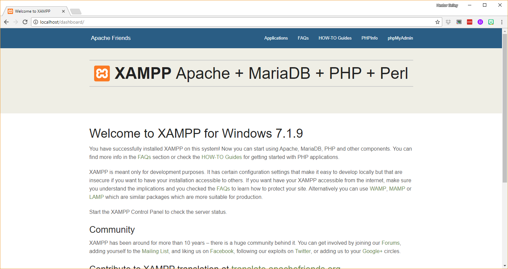
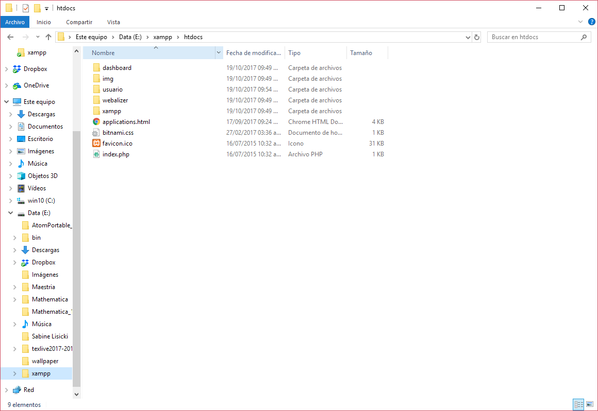
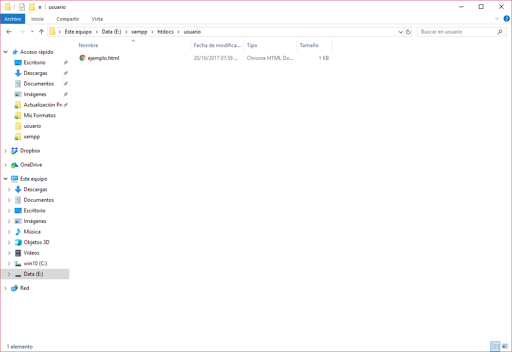
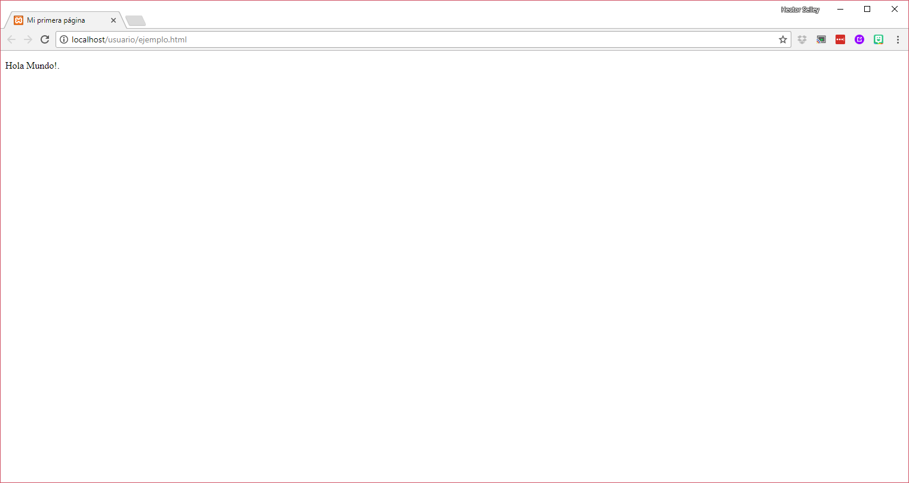
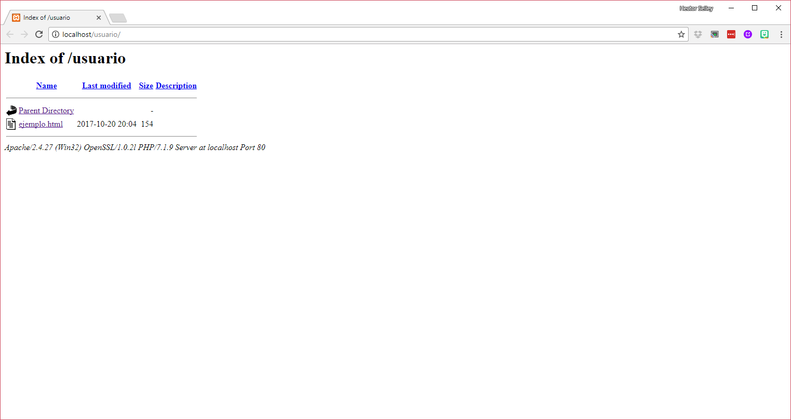
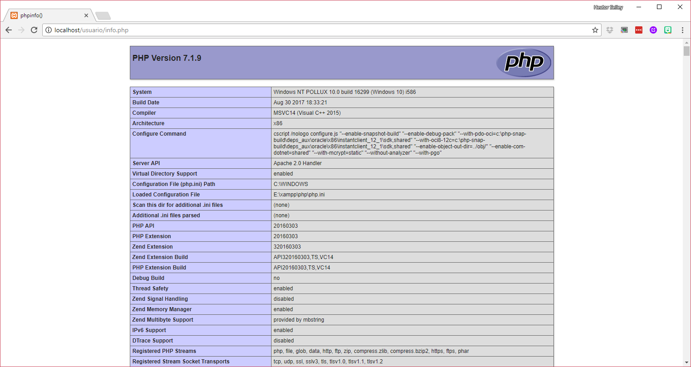
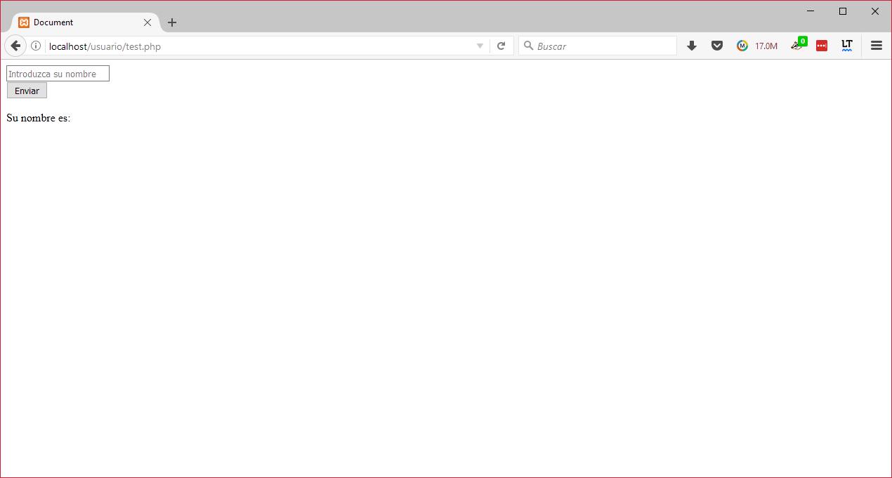
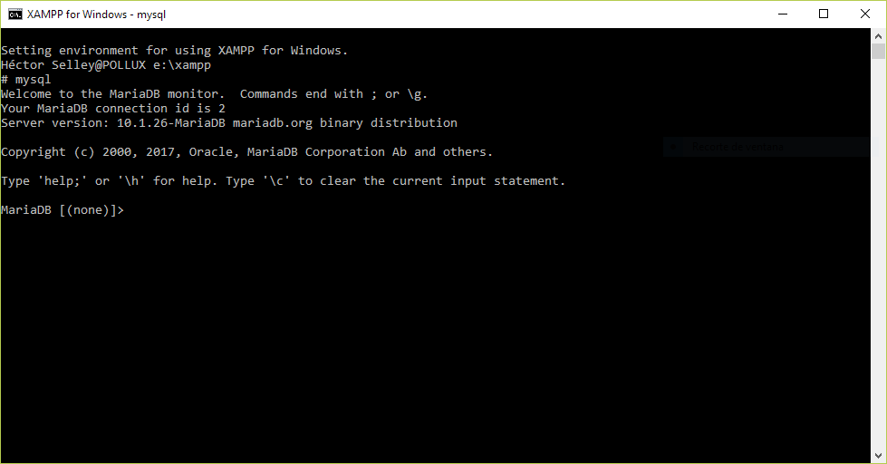

Para el desarrollo de aplicaciones Web que se comuniquen con una base de datos, se requiere de un servidor que contenga
todos los servicios necesarios configurados y en ejecución. Dichos servicios para nuestro caso son Apache,
MySQL y PHP, donde son el servidor Web, Gestor de Bases de Datos y el lenguaje PHP respectivamente.
Para nuestro caso, no tenemos un servidor a nuestra disposición por lo que optaremos por utilizar un software que permita que nuestra computadora actúe como servidor y cliente a la vez. Este software se llama XAMPP.
XAMPP es una distribución de Apache completamente gratuita y fácil de instalar que contiene MariaDB (un equivalente a MySQL), PHP y Perl. El paquete de instalación de XAMPP ha sido diseñado para ser increíblemente fácil de instalar y usar.
La utilización de XAMPP es recomendable solamente en computadoras con Windows, en el caso de GNU/Linux o macOS es mejor utilizar los servidores que vienen instalados y/o disponibles de forma nativa en el sistema operativo.
Para el caso del servidor LAMP en macOS, sugiero que sigan esta guía. En el caso de alguna distribución GNU/Linux, deberán referirse a la documentación de la distribución que estén utilizando.
XAMPP en Windows
En primer lugar, deben ingresar a la página del desarrollador de XAMPP y descargar la última versión del programa. Una vez que lo haya descargado, instale el programa.
Una vez instalado, ejecute la aplicación y se abrirá el Panel de Control de la misma. Se debe ver similar a esta:

Figura 1. Panel de Control XAMPP
Este panel de configuración permite iniciar, detener, configurar y ver registros de los servicios que ofrece XAMPP.
En este caso iniciaremos los servicios Apache y MySQL presionando el botón Start en ambos servicios.
El panel de control informará si los servicios fueron iniciados correctamente y los puertos en los que se encuentran
habilitados. La salida del panel deberá ser similar a esta:

Figura 2. Inicio de Servicios XAMPP
Si los servicios no fueron iniciados correctamente, debe haber algún problema en la configuración de Windows o bien en la instalación de XAMPP. Para resolver alguno de estos problemas, por favor consulte la documentación en la página de XAMPP para mayor información y posibles soluciones a su problema.
Los botones Admin, Config y Logs nos permiten adminstrar, configurar y ver las
bitácoras de algún servicio en XAMPP.
Si por alguna razón desearamos detener los servicios, bastaría con presionar el botón Stop del servicio
en cuestión.
Servidor Apache
Para saber si nuestro servidor Web se encuentra funcionando correctamente, basta con ingresar en el navegador la dirección web http://localhost, el resultado debería ser algo similar a esto:

Figura 3. Pantalla de Bienvenida de Apache
Si ve una pantalla similar a la anterior, significa que el servidor Apache está funcionando correctamente.
El servidor Web Apache tiene una carpeta donde busca los archivos HTML de la página que sirve a las solicitudes de los clientes,
esta carpeta se llama raíz. Dicha carpeta se encuentra en la ubicación donde se instaló XAMPP en su computadora, por defecto es
C:\xampp.
Dentro de la carpeta de instalación de XAMPP se encuentra el directorio htdocs que es el directorio raíz del servidor,
es decir, el servidor Apache buscará los archivos de la página web en su interior.

Figura 4. Directorio Raiz de Apache
Observe que en este directorio se encuentran los archivos de la página de bienvenida que muestran en la Figura 3.
El archivo que se muestra en esa bienvenida es index.php.
Dentro de este directorio raíz haga una carpeta para el desarrollo de sus archivos, en mi caso fue una llamada usuario.
Observe en la Figura 4 que dicha carpeta ya ha sido creada.
Haga un archivo HTML de prueba, el código puede ser el siguiente.
<!DOCTYPE html>
<html>
<head>
<title>Mi primera página</title>
<meta charset="UTF-8">
</head>
<body>
<p>Hola Mundo!.</p>
</body>
</html>
Guarde el archivo como ejemplo.html dentro de la carpeta que creó, en mi caso D:\xampp\usuario\ejemplo.html.

Figura 5. Archivo Prueba HTML
Para abrir la página a través del servidor Web Apache, abra su navegador Web y escriba la dirección http://localhost/usuario/ejemplo.html. Si todo es correcto, debería ver algo similar a esto:

Figura 6. Prueba del archivo HTML a través del Servidor Web Apache
Adicionalmente, puede ingresar la dirección http://localhost/usuario en su navegador y verá un listado de los archivos contenidos en el directorio que creó.

Figura 7. Directorio raíz a través del Servidor Web Apache
Ahora podrá guardar todos los archivos HTML y/o PHP en ese directorio para sus desarrollos. Considere que
también puede crear tantas carptetas como deseé dentro del directorio raíz y acceder a ellas tal como lo hicimos con el ejemplo
llamado usuario.
PHP
Para los archivos PHP basta con escribirlos y guardarlos dentro de la carpeta raíz de Apache, recuerde que PHP es un lenguaje preprocesado, es decir que corre del lado del servidor por lo que el servidor Apache deberá ejecutarlo y enviar los resultados al cliente (el navegador).
La primera prueba se realizará con una función de diagnóstico de PHP, para ello haga un archivo nuevo con el siguiente código:
<?php
phpinfo();
?>
Guarde el archivo con nombre info.php dentro de la carpeta que creó en el directorio raíz, en mi caso la carpeta usuario.
Ahora abra el archivo desde el navegador ingresando la dirección correspondiente, en mi caso es
http://localhost/usuario/info.php. Si todo funciona correctamente deberìa ver el
resultado de la función diagnóstico, similar a esto:

Figura 8. Función de diagnóstico de PHP
Ahora hagamos un formulario en HTML que permita interactuar con el usuario, de manera que lo que el usuario ingrese a través de un campo de texto
sea impreso en la misma página utilizando PHP. Es decir, PHP tomará la información recaudada por un elemento HTML y
permitirá imprimir esa información en otro elemento HTML.
El código es el siguiente:
<!DOCTYPE html>
<html lang="en">
<head>
<meta charset="UTF-8">
<title>Formulario HTML con PHP</title>
<?php
if($_SERVER["REQUEST_METHOD"] == "POST") {
$name = $_POST["nombre"];
}
else $name ="";
?>
</head>
<body>
<form method="post" action="<?php echo htmlspecialchars($_SERVER["PHP_SELF"]);?>">
<input type="text" name="nombre" placeholder="Introduzca su nombre"> <br>
<input type="submit" name="" value="Enviar">
</form>
<p>Su nombre es: <?php echo $name; ?></p>
</body>
</html>
Guarde este archivo con cualquier nombre pero deberá tener extensión .php, en mi ejemplo el nombre es test.php.
Ahora abra el archivo en el navegador, mediante la dirección http://localhost/usuario/test.php,
naturalmente use el nombre del archivo que usted haya decidido utilizar.
Si todo funciona correctamente debería ver algo similar a esto:

Figura 9. Formulario HTML dinámico a través de PHP
Si todo funciona correctamente, escriba su nombre en el formulario y luego de hacer click en Enviar, deberá ver su nombre en la parte inferior.
Utilice este código como base para los ejercicios de la Práctica 8.
MySQL
El botón Shell que se encuentra a la derecha en el panel de control de XAMPP, permitirá abrir una consola en
la que podemos entrar al gestor de la base de datos MariaDB. Abra la consola y escriba mysql para ingresar,
debería ver algo similar a esto:

Figura 3. Consola de MySQL
Ya en esta consola, podrá comunicarse directamente con el gestor a través del lenguaje SQL. Podrá realizar consultas, inserciones y demás cosas que vimos en la parte del curso de SQL.